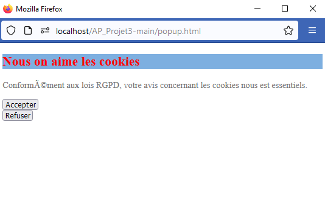
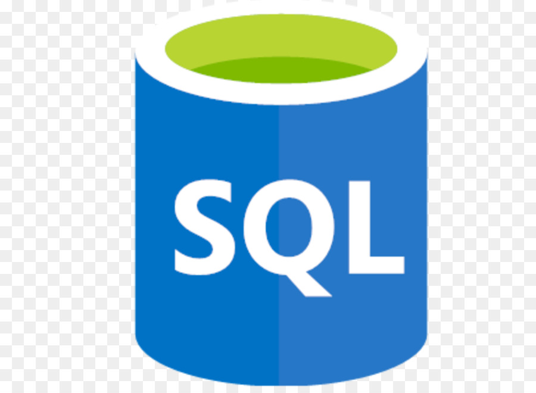
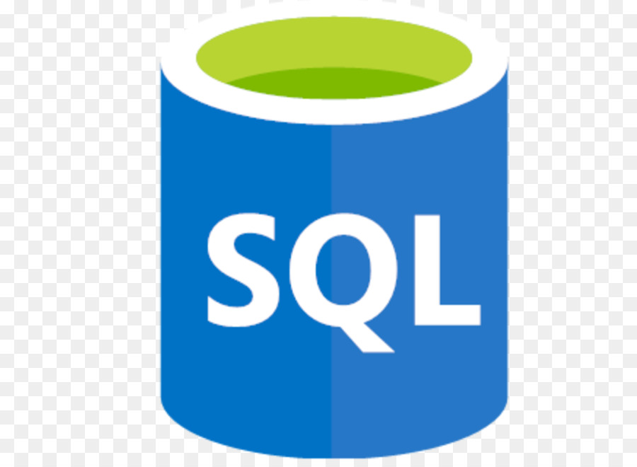
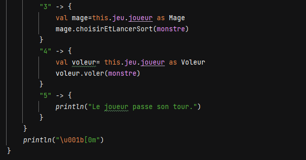

Ma formation
Bac STAV
test formation
BTS SIO option SLAM
test experiences
Projet n°1: ACF2L
Nous avions un template de site déjà fait ayant pour sujet un faux service de location d'ULM situé à Frotey-lès-Lures.
Par groupe de 4 nous avons du modifier le template et insérer de nouvelles fonctionnalités comme:
- Créer un tableau avec les tarifs.

- Un formulaire d'inscription lié à une base de données.

- Une API qui indique la météo.
- Un pop-up pour demander d'accepter les cookies. 
Langages utilisés:
Langages utilisés:


 

Projet n°2: Geoworld
Nous avions une base de données référançant tout les pays du mondes et un site qui affichait les données d'un continent.
Par groupe de 2 nous devions modifier le site afin de:
- Modifier la direction artistique du site
- Pouvoir modifier le continent que l'on souhaite afficher.

- Créer plusieurs rôles (élève, professeur, administrateur) ayant tous différents droits et forcer l'utilisateur à se connecter et garder la session ouverte sur tout le site
- Ajouter la possibilité de mettre à jour la base de données seulement pour les professeurs et les administrateurs.
- Ajouter la possibilité d'ajouter un utilisateur pour l'administrateur

- Ajouter une fonctionnalité de notre choix. Avec mon binône nous avons choisi d'installer un système de chat
Langages utilisés:
Projet n°3: Virtual Landscape
Nous avions pour consigne de créer un site qui génère un paysage à partir d'éléments générés plus ou moins aléatoirement. Par groupe de 2 nous avions du modifier les éléments pour:
- Créer un nouveau paysage différent de celui de base.

- Pour ce faire nous avions créé de nouveaux éléments comme un nuage.
 Mon camarade et moi avions pour projet de créer un paysage inspiré du vieux Londres. Cependant nous avons surrévalués nos capacités et très mal géré notre temps. Par conséquent nous avons malheureusement un résultat défaillant qui ne remplit pas les attentes des professeurs mais surtout de nous même.
Mon camarade et moi avions pour projet de créer un paysage inspiré du vieux Londres. Cependant nous avons surrévalués nos capacités et très mal géré notre temps. Par conséquent nous avons malheureusement un résultat défaillant qui ne remplit pas les attentes des professeurs mais surtout de nous même.
 Langages utilisés:
Langages utilisés:
Projet n°4: Kotlin Adventure
L'objectif de ce projet était de créer un jeu vidéo de type RPG avec Kotlin. Par groupe de 3 nousnous étions répartis différentes taches pour ma part, j'ai réalisé les taches suivantes:
- Créer la fonction tourDeJoueur() qui permet de faire jouer le joueur en lui laissant choisir entre plusieurs options puis je l'ai complété au fil du temps avec de nouvelles options 
- Créer le système d'armures du personnage en créant la classe Armure et TypeArmure ainsi que la fonction qui permet de calculer les dégats réduits en fonction de l'armure portée avec l'option pour équiper une armure ou une arme


- Créer un système de classes avec les classes Guerrier, Mage, Voleur
- Créer un sort exclusif à la classe voleur
 J'ai également pu aider mon un de mes camarades dans la création des objets bombes et potion, et la création de classes exclusives au Mage
J'ai également pu aider mon un de mes camarades dans la création des objets bombes et potion, et la création de classes exclusives au Mage
Langage utilisé: 
Projet n°5: Sushi app
Nous avions pour consigne de créer un site qui puisse permettre de commander des sushis. Pour ce faire nous avions à notre disposition un fichier Json et nous devions faire une API pour:
- Afficher les données grâce à celui-ci et consulter les détails de la box de sushi.
- Faire une page pouvant afficher le panier et le récapitulatif de commande.

- Pouvoir passer commande directement sur le site en sélectionnant le nombre de sushis que nous souhaitons
- Faire en sorte que le récapitulatif de commande s'affiche bel et bien
Nous n'avons évidemment pas ajouté la page de paiement pour ne pas vous dérober de l'argent ;).
Langages utilisés: